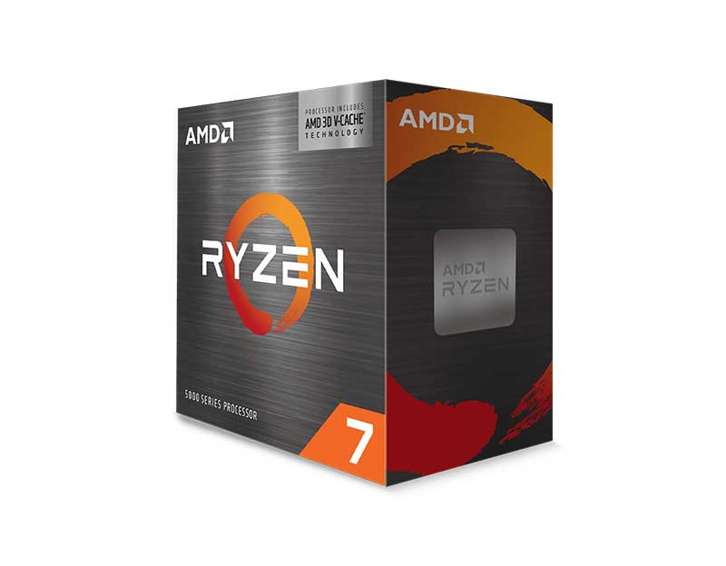
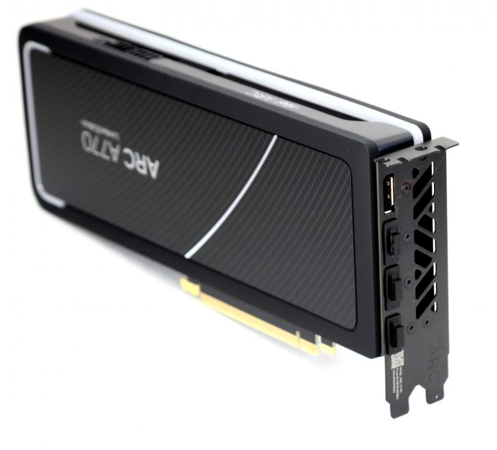
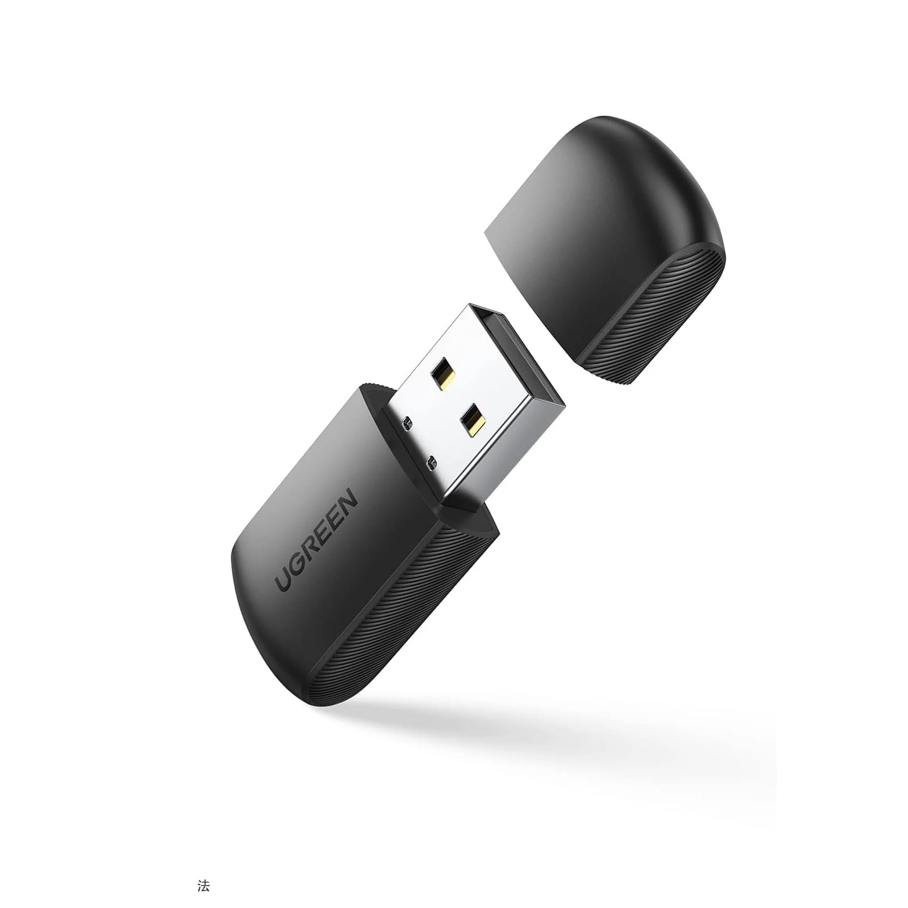
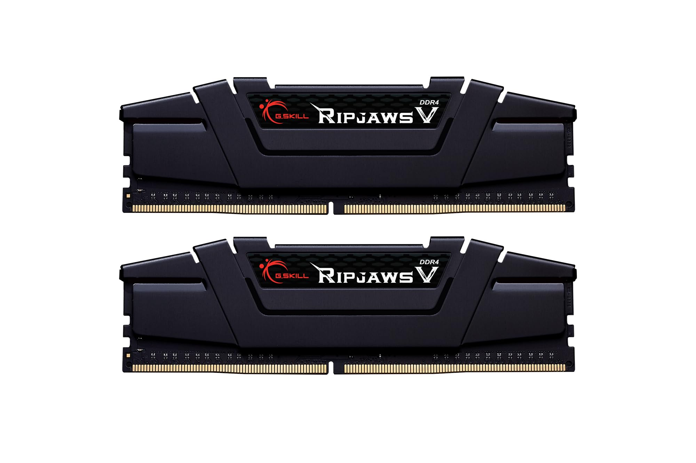
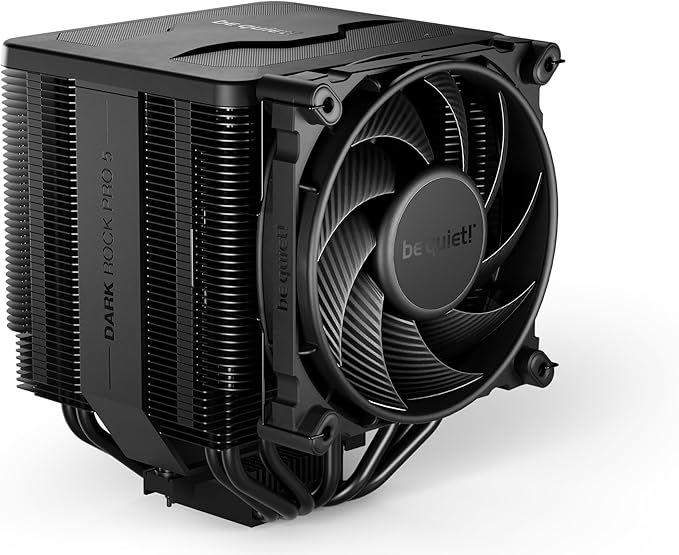
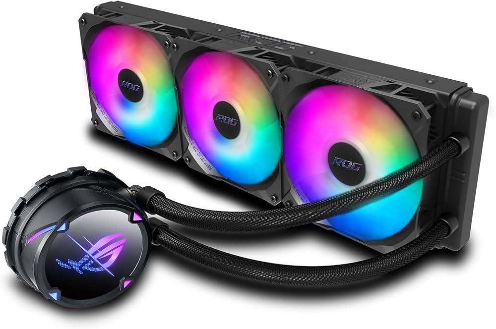
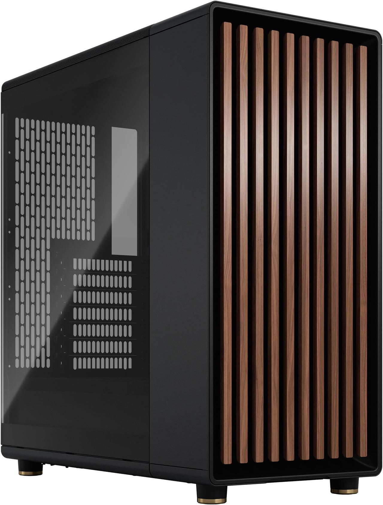

How to Build a Computer: Part 1
Materials Needed:
- An internet connection
Let's get started!
This segment is mainly about locating and purchasing parts. If you have already purchased parts, please skip to Part 2, where assembly begins.
To begin, you'll need a CPU, or Central Processing Unit.

Note: your CPU will not look like this. This is an older CPU.
There are 2 major brands you can get your CPU from, being AMD and Intel. AMD's CPUs tend to be cheaper and have better price-to-performance, while Intel's CPUs are some of the fastest in the world,
albeit rather expensive. For a good (but not overkill) AMD CPU, you can expect to be paying anywhere from $229 to $359, while for an Intel CPU of equal power, you could pay anywhere from $250 to $300.

The AMD Ryzen 7 5800X3D.
The AMD Ryzen 7 5800X3D.
Moving on, the next thing you will need is a GPU, also known as a graphics card, or, more formally, a Graphics Processing Unit.
This component handles drawing all the graphics on your screen, such as games, browsers, or other programs, so you'll want to get a nice one.
Unfortunately, thanks to the bad GPU market right now, the prices are sky-high, and it is difficult to get a good one at even a low-ish price.
To give some perspective on this, a good GPU (like the RTX 4070-Ti) will run you upwards of $700. However, you can get your hands on some cheaper cards, but they will be lower-performance.
However, some cards balance price to performance spectacularly, such as Intel's new line of Arc GPUs (the Arc A310, A380, A580, A750, and A770).

The Intel Arc A770.
The Intel Arc A770.
Personally, I own the Arc A770 16GB. I think that it's a spectacular card. However, you must remember that this all boils down to personal preference and
your specific needs. Do you need power for gaming? AI? Software development? Or do you just need something that you can use to browse the web?
Next up: the motherboard.

Note: your motherboard will not look like this. This is an older motherboard.
Your motherboard is a very important part of the computer, as it links all the components together. Remember, a chain is only as strong as its weakest link.
You do not necessarily need a very expensive or feature-filled motherboard, though. You probably don't even need Wi-Fi, as you can buy a spectacular Wi-Fi 7 dongle for around $60,
or you can get a run of the mill Wi-Fi 2 or 3 dongle for around $10.
Moreover, as long as the motherboard has the correct socket type for your CPU, you are fine. Just make sure you don't buy a brand-new motherboard with an outdated socket type that can't be upgraded over time.

A run of the mill Wi-Fi 4 dongle priced at $23.04.
A run of the mill Wi-Fi 4 dongle priced at $23.04.
Moving on again! Now it's time for Random Access Memory, better known as RAM.

A 32GB kit of G.Skill Ripjaws V DDR4 running at 3200MHz.
A 32GB kit of G.Skill Ripjaws V DDR4 running at 3200MHz.
Memory is what your computer reaches for when it needs to store things very temporarily, like game data (this is why loading takes a while).
There are two things you need to consider when buying RAM: capacity and frequency. Capacity is how much space the RAM can hold (normally 16 or 32 gigabytes), and frequency is how fast
data can be read or written to your RAM. Usually, faster is better.
Onwards we continue!
It is now time to pick your CPU cooler.
This is a spectacularly important choice for you to make, as it decides how easily your CPU overheats.
There are two main types of CPU coolers: an air cooler,

A be quiet! Dark Rock Pro 5 Air Cooler priced at $71.90.
A be quiet! Dark Rock Pro 5 Air Cooler priced at $71.90.
or an AIO (All in One) cooler.

An ASUS ROG Strix LC II ARGB AIO fitted for an Intel LGA socket.
An ASUS ROG Strix LC II ARGB AIO fitted for an Intel LGA socket.
As they are powered by water (yes, water), AIO coolers tend to be more efficient and more powerful
thanks to water's spectacular heat conduction properties. However, despite this enchanced efficiency,
they are rather expensive (ranging from ~$80 to ~$250).
Onwards again!
Time to choose your case. Your case is, as you could have probably guessed, the box that your computer sits inside.

A Fractal Design North ATX midtower case priced at $109.99.
A Fractal Design North ATX midtower case priced at $109.99.
This is the main part that you should cut back on if you are on a budget, as it has no influence on how fast your computer runs (besides airflow, but we'll get to that in a minute).
There are many different things you can look for in a case, including size (ATX midtower, ATX fulltower, Micro-ATX, Mini-ITX, etc), side panel type (metal, acrylic, tempered glass), and just style.
Congratulations! You've done it!
You have now successfully selected and purchased your custom computer parts.